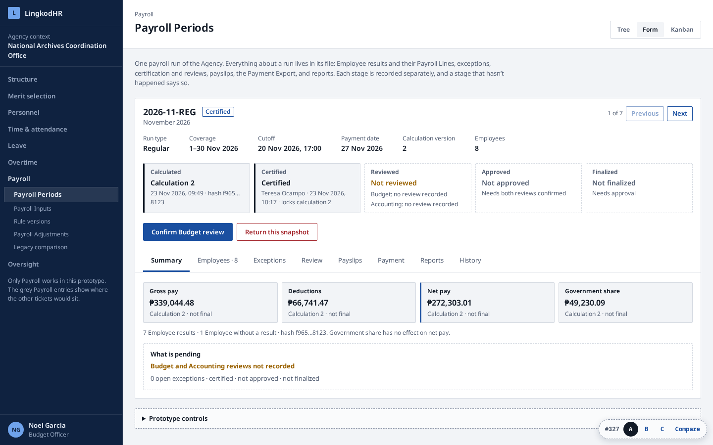
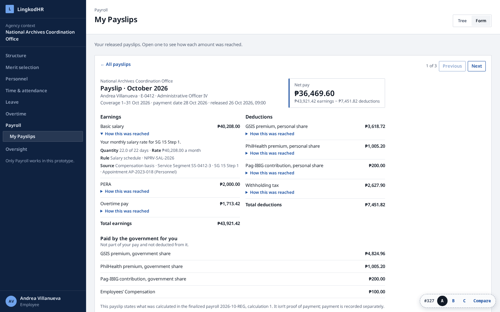
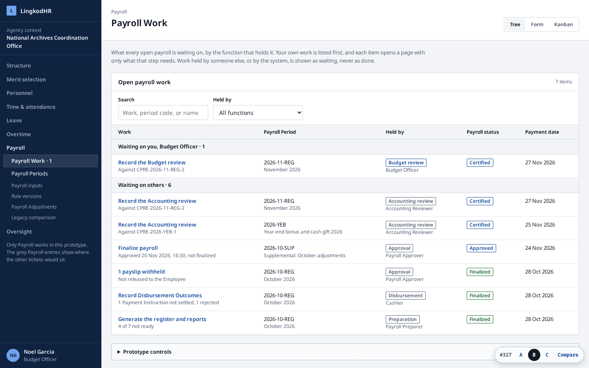
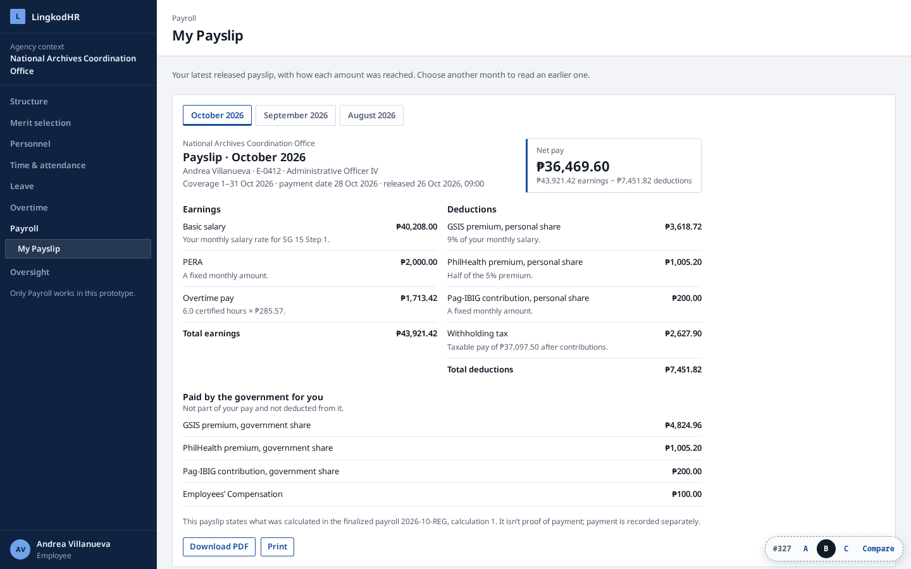
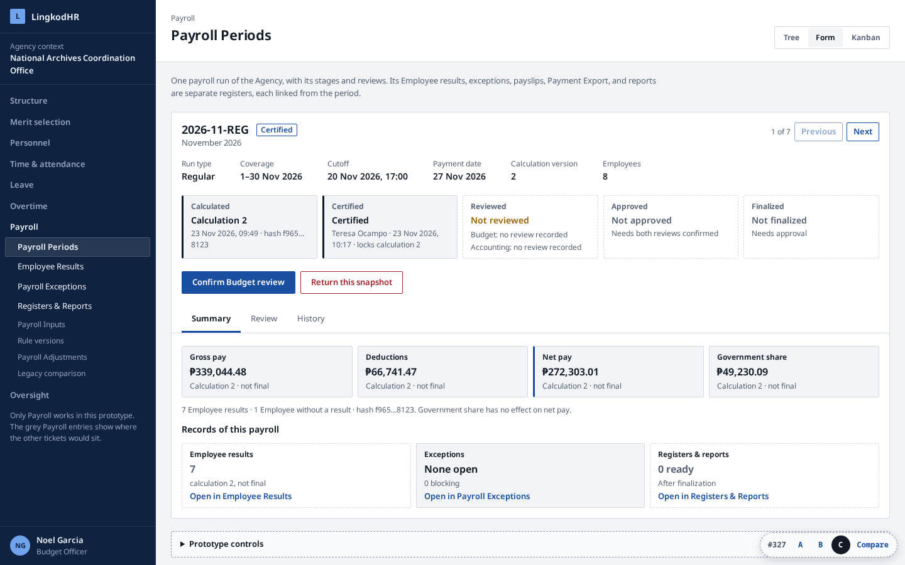
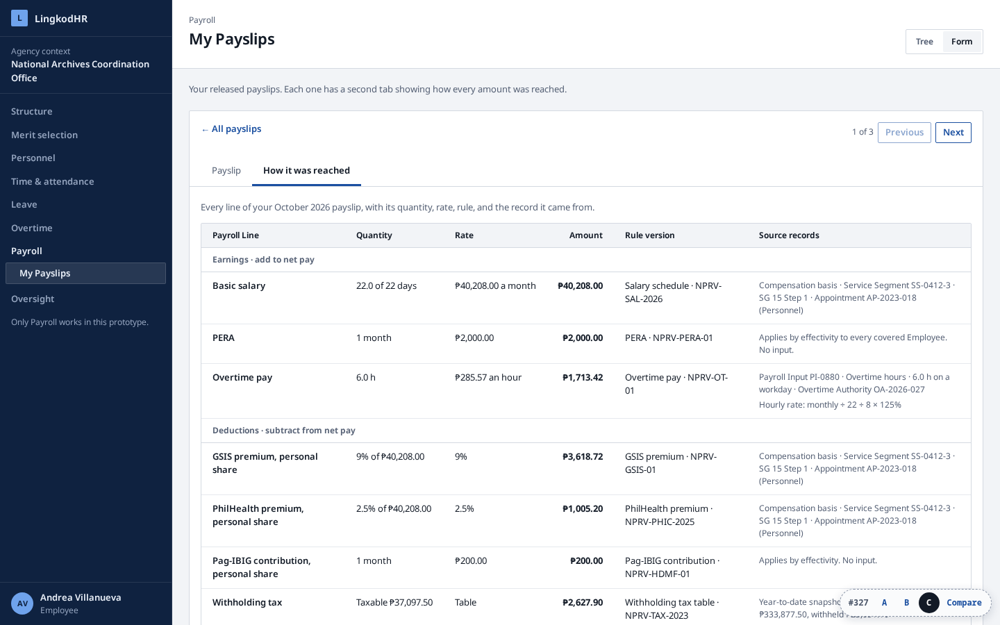

All three keep the existing workbench theme, shell, and the Tree/Form/Kanban pattern accepted for Attendance, Leave, and Overtime. They share one sample payroll and the same screens for results, Payroll Lines, exceptions, reviews, payslips, the Payment Export, and reports. What differs is where those screens live and where each actor starts.
The Payroll Period is the one record from draft to disbursement, as the Overtime Authority is. Its Form has eight tabs: Summary, Employees, Exceptions, Review, Payslips, Payment, Reports, History. An Employee result opens inside the Employees tab.


Each actor lands on Payroll Work: what every open payroll is waiting on, grouped by the function that holds it, with their own work first. An item opens one page with only what that step needs. The Payroll Period becomes a read-only record.


Each record type is its own register across payrolls, as Leave keeps its ledger apart from applications: Payroll Periods, Employee Results, Payroll Exceptions, Payslips, Payment Exports, Registers & Reports. The period Form keeps only Summary, Review, and History, and links into each register filtered to itself.


| Job from the issue | A · Period file | B · Work desk | C · Linked registers |
|---|---|---|---|
| Period list and detail | Payroll Periods: Tree, Form, Kanban by state | Payroll Periods: Tree and a read-only Form | Payroll Periods: Tree, Form, Kanban by state |
| Employee result and Payroll Lines | Employees tab, drill-in | Inside the step page, or the period's Employees tab | Employee Results register, own Form |
| Exceptions | Exceptions tab | "Correct and recalculate" and "Certify" step pages | Payroll Exceptions register, Kanban by status |
| Certify, review, approve, finalize | Buttons on the period head; Review tab | One step page per function | Buttons on the period head; Review tab |
| Payslips | Payslips tab | "Release payslips" step page | Payslips register, Kanban by status |
| Payment Export and outcomes | Payment tab | "Record Disbursement Outcomes" step page | Payment Exports register, own Form |
| Register and reports | Reports tab | "Generate the register and reports" step page | Registers & Reports |
| Employee's own payslip | List, then expandable lines | Latest payslip, month picker | List, then Payslip and "How it was reached" tabs |
| Payroll entries in the navigation | 2 (+4 for later tickets) | 3 (+4) | 7 (+4) |
A stage rail has one cell per stage, each with who acted, when, and the calculation it binds. Reviewed lists the Budget and Accounting reviews separately. Only Finalized is green; Certified and Approved are never styled as finished.
A stage that hasn't happened has a dashed border and says so in words: "Not certified", "1 of 2 reviews confirmed", "Calculation 2 running, no results yet". The same holds for payslips (Generating, Ready, Released), the Payment Export ("marked no one paid"), and reports.
The same for A, B, and C. Nothing new is added: every value is an existing workbench token from apps/web/src/app/globals.css (#231), as the Overtime prototype used.
Noto Sans Variable · ₱271,722.99 · 2026-11-REG
One family for headings and body, with tabular figures in tables. Page title 22px / 650, panel title 14px / 650, body 14px, small 13px, caption 12px. The variant switcher alone uses the system monospace, to keep it apart from the design.
#0f2240nav#e8eef7nav text#93a3bdnav muted#6fa3ecnav focus#f2f4f7canvas#ffffffsurface#d4d9e1border#e6e9eeborder subtle#121a26ink#566175ink muted, neutral#1a4fa0primary, info, focus#153f80primary hover#1e6b3asuccess: Finalized, Released, Settled#9a6200warning: waiting, generating#a4262cdanger: blocking, voided, rejected